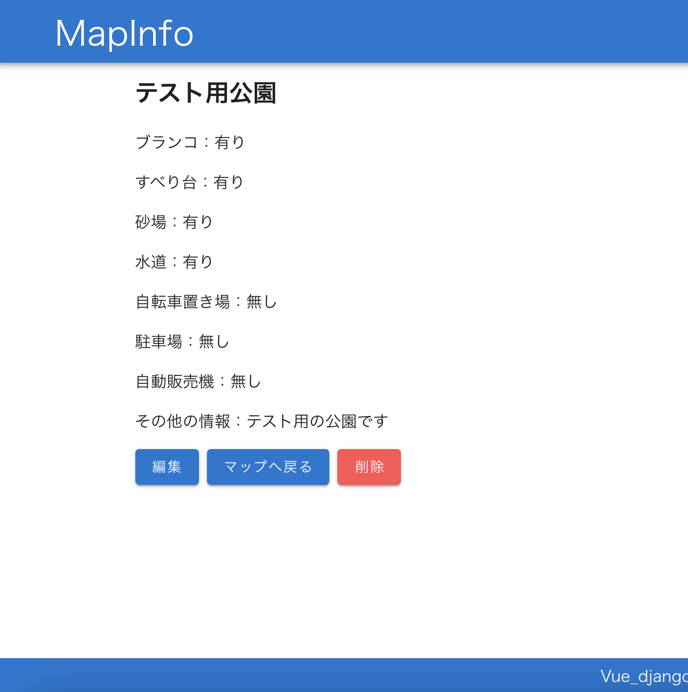

MapInfo（公園情報共有アプリ）
開発環境
Python / Django REST framework / Vue.js / JavaScript / SQLite / GitHub / Heroku / Visual Studio Code
-
概要
制作時間 130時間 URL https://mapinfo-6239.herokuapp.com/ ID user PASS mapinfo1234
OUTLINEアプリケーションの概要
オリジナルアプリケーションとして、公園情報を共有する地図アプリを開発しました。
主な機能は、公園情報の登録、および地図上で登録されている情報の確認です。
トップページにアクセスすると、様々な趣味のジャンルについて表示されています。それをクリックすると、そのジャンルにおけるタイムライン機能を閲覧することができます。
トップページにアクセスすると、Google Mapが表示されます。登録したい位置をクリックして、情報を登録します。
また、登録されている公園は地図上にマーカーが立っており、クリックすることで情報を確認することができます。
-
開発に至った経緯
子育てをする上で、公園を利用する機会は多く少しの時間でも子供を遊ばせるために利用をしているのですが、
「たまには違う公園で子供を遊ばせてあげたい」
「買い物や保育園の送迎の途中で遊ばせたい」
「遠出をした際に少し子供を遊ばせたい」そう思ったときに意外と家から少し離れるとどこに公園があるかがわからないという悩みがありました。
私自身、3歳の子供がおり良く公園を利用しているので、近い年代の子供がいる家庭では同様の課題を感じているのではと考えました。
そこで、自分が知っている近所の公園の情報を共有しあえるアプリケーションを作成することにいたしました。 -
開発で工夫したこと
1つ目は、Map上でクリックをした際のマーカーの挙動や登録済みの公園の所在地にマーカーを設置し、情報を持たせることです。
googleMapsAPIを使用して実装をしたのですが、関連する情報が少なかったため試行錯誤を繰り返しながら関数などを追加していき理想通りの挙動を実現することができました。2つ目は、ページ遷移後のMapの表示位置です。
ページ遷移後にMapの画面に戻ると常に初期表示の位置にMapが戻ってしまっていたので、以下のような設定を試みました。■Map上で詳細ページへ遷移後に、再びMapに戻った際に選択した公園を中心にMapを表示
■Map上で位置を指定して、情報登録画面に遷移後に再びMapに戻った際に選択した位置を中心にMapを表示この設定をするにあたり、ページ遷移をすると選択した位置情報が消えてしまうという課題に直面しました。 試行錯誤した結果、セッションストレージへ最後に選択した位置情報を保存することで解決することができました。
-
今後実装したいと思っていること
公園の情報量を増やして、詳細画面で表示する情報を増やしていきたいと思っております。
1つ目は、画像の投稿機能です。
どんな公園かがわかるために、画像があるとわかりやすいため。djangoのAPIとVue.js間のデータのやりとりがうまく行かずに後回しにしてしまっていたので、今後優先して実装したいと考えております。2つ目は、コメント機能です。公園についてコメントを残せるようになれば、より詳細な情報を得ることができるようになると考えております。